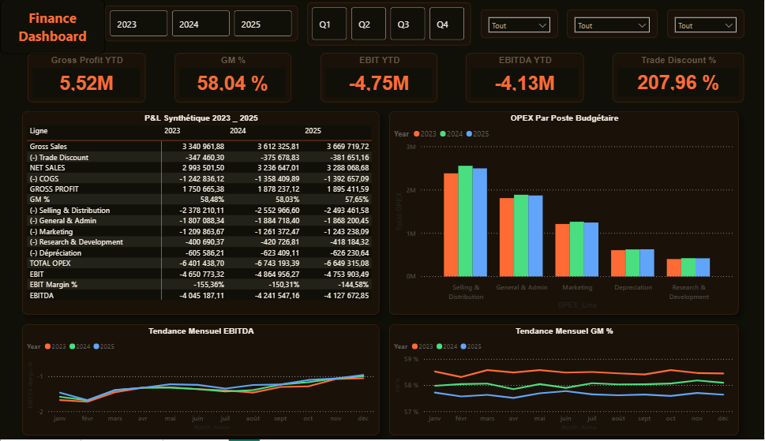
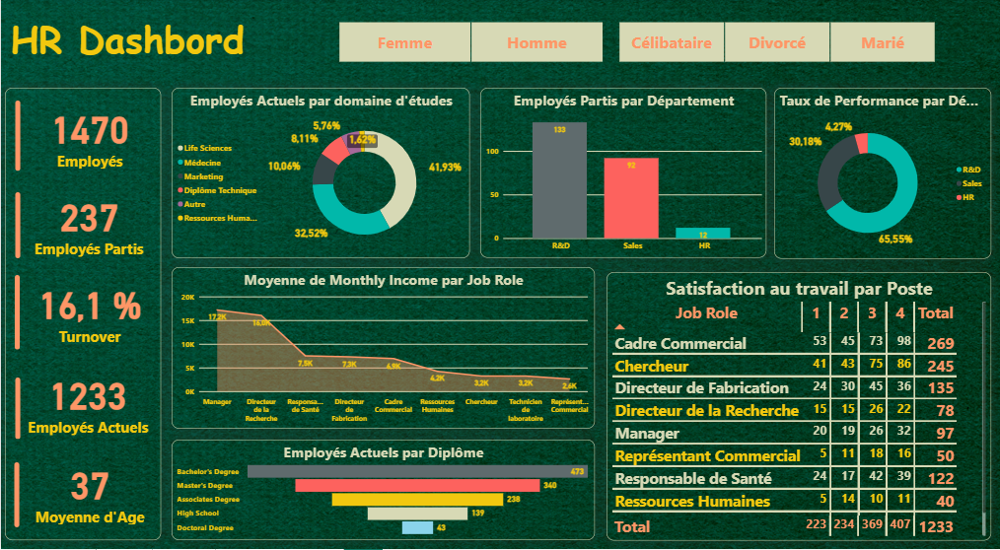
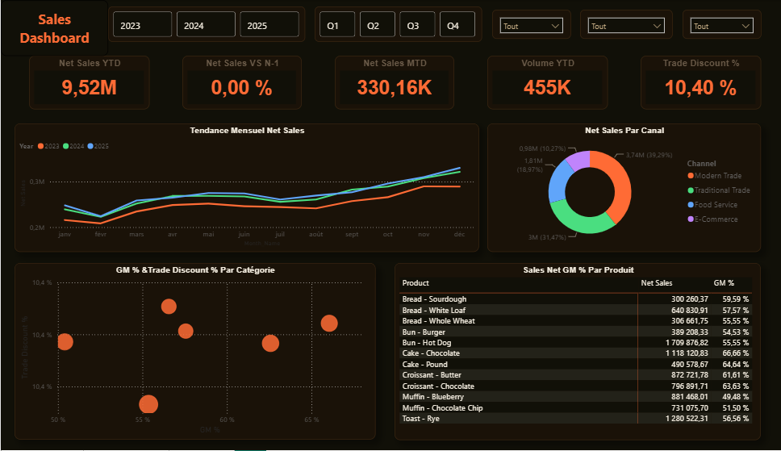

Portfolio
Power BI Dashboards
Four end-to-end projects covering Finance, HR, Sales, and regional performance intelligence.

Financial Controlling
P&L & Financial Performance Dashboard
Multi-year financial reporting dashboard (2023–2025) covering Gross Sales, Net Sales, COGS, OPEX breakdown, EBIT, and EBITDA. Enables quarter-by-quarter comparison with drill-down by cost center and time period.

Human Resources Analytics
Workforce & Turnover Intelligence Dashboard
Comprehensive HR dashboard tracking 1,470 employees across departments. Covers turnover rate, income by job role, attrition by department, education breakdown, and a job satisfaction matrix — filtered by gender and marital status.

Commercial Performance
Net Sales & Margin Analysis Dashboard
Multi-year sales dashboard (2023–2025) with YTD tracking, monthly trends, channel mix (Modern Trade, Traditional Trade, Food Service, E-Commerce), and product-level GM% ranking to identify top and low performers.

Geospatial & Regional Analysis
Morocco Regional Sales Intelligence Dashboard
Regional sales performance dashboard covering 5 Moroccan regions (Casablanca-Settat, Fès-Meknès, Rabat-Salé-Kénitra, L'Oriental, Tanger-Tétouan). Includes payment mode breakdown, customer segment analysis, product profitability, and an interactive geographic map.